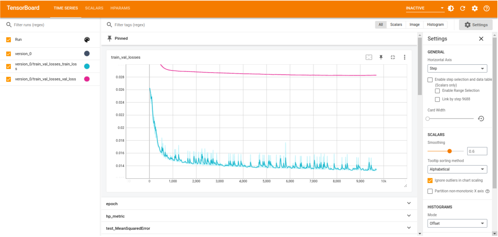

Advanced features
Debug option
The toolbox includes a debug option which reduces the training to a single number of epochs. To enable this feature, set the parameter debug to True or to a number in the configuration file. When this option is set, the training is reduced to 1 epoch. If set to a number, the test and inference is reduced to that number of samples.
debug: TrueThe debug option is recommended to use when the model is not performing as expected.
Tensorboard
One feature that deserves special mention for its usefulness, mainly during the training stage, is the AIDE toolbox-TensorBoard compatibility. TensorBoard is an invaluable tool for training DL architectures because it provides real-time insights into model performance, allowing users to visualise and monitor training metrics, analyse model architectures, and identify performance bottlenecks. We show an example of the TensorBoard interface in the following figure during training, to monitor the loss on the training and validation subsets of the model.
{kind=link}
Custom models
Apart from the predefined models, the toolbox includes a user-defined option, i.e., it offers users the possibility of developing and including their own models.
The implementation in python should be included in the AIDE > user_defined > models > user_defined.py as a Pytorch nn.Module class.
To use user-defined model, specify the following fields on the configuration file:
arch: user_defined: True type: Model_class_name (String) params: ... input_model_dim: ... output_model_dim: ...
Custom Losses
To further tailor the model’s training, the toolbox includes the possibility to ingrate user-defined loss functions. To incorporate your loss, create a file with your Python class nn.Module at AIDE > user_defined > losses > your_loss_name.py and import the class at the __init_.py file of that same folder.
Then, use the loss section on the configuration file to choose the new loss. The parameter type has to match with the name of the Python class. The parameter package has to be 'none' to perform a local search of the loss.
loss: user_defined: True type: Loss_class_name (String) package: 'none' activation: type: ... masked: ... (Options: True/False) params: ...
Custom Evaluation
At the final stage of developing your model, you may require alternative evaluations of your model. In this case, the toolbox provides an empty class where you can implement any complementary analysis of results. This class can be found at AIDE > evaluators > custom > customEvaluator.py. It will receive the variable inference_outputs, a dictionary with the outputs of the model (x), the ground-truth (labels) and masks.
class CustomEvaluator(): def __init__(self, config, model, dataloader): self.config = config self.model = model self.test_loader = dataloader def evaluate(self, inference_outputs): """ Include your code here """This new evaluation block can then be used through the configuration file as follows:
custom: activate: false params: ~The parameter params allows for the definition of any extra variables that you may want to define from outside the toolbox.